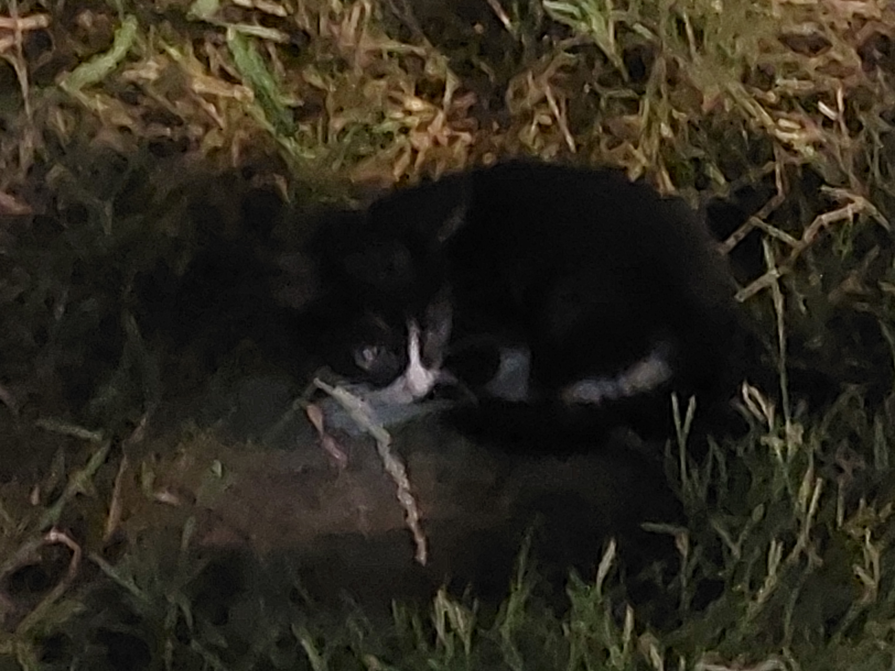
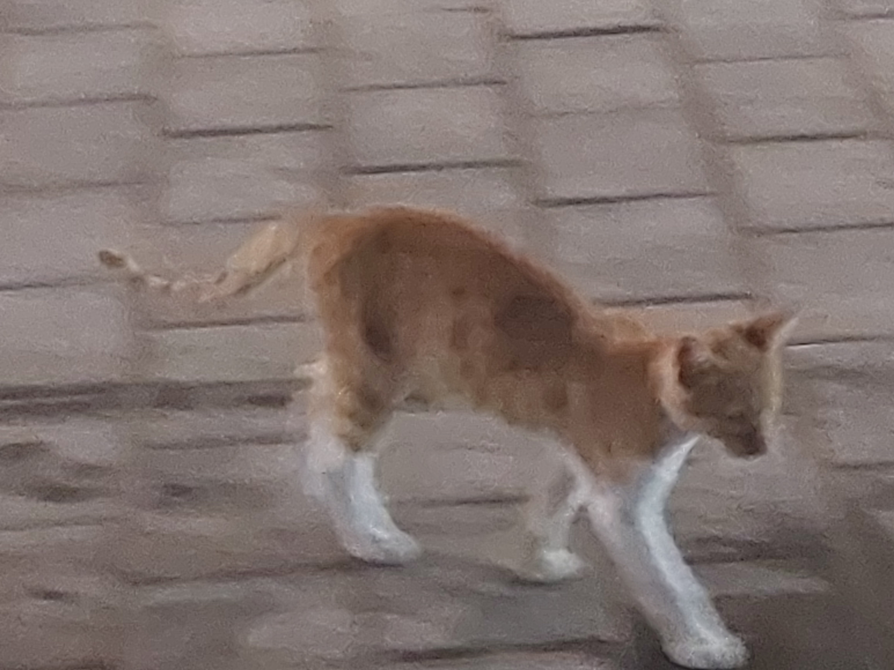
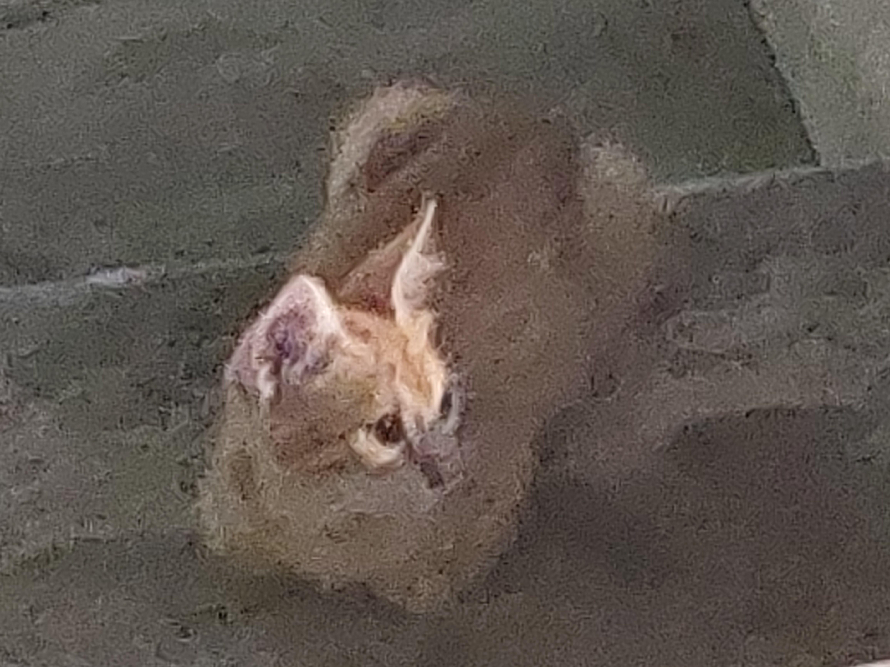
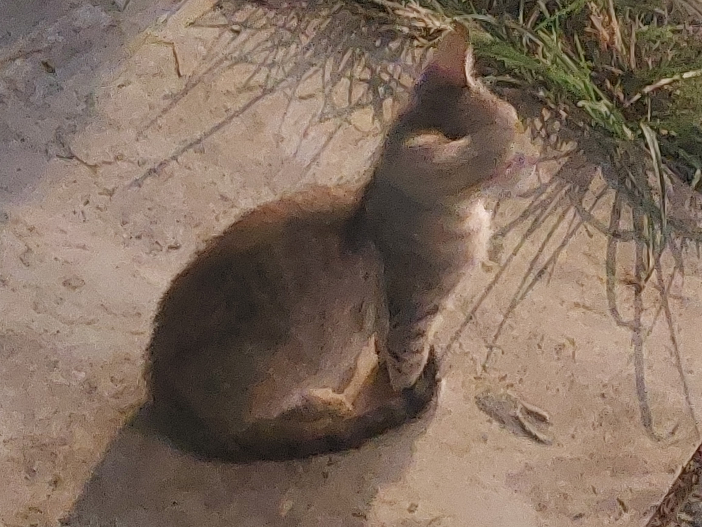
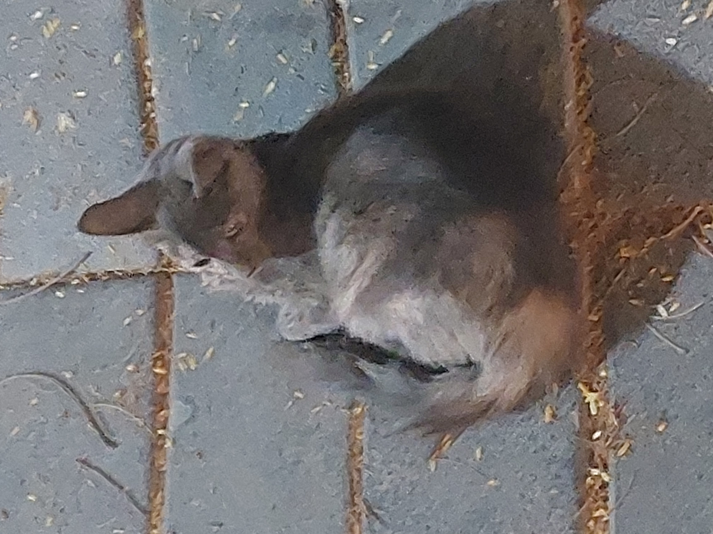
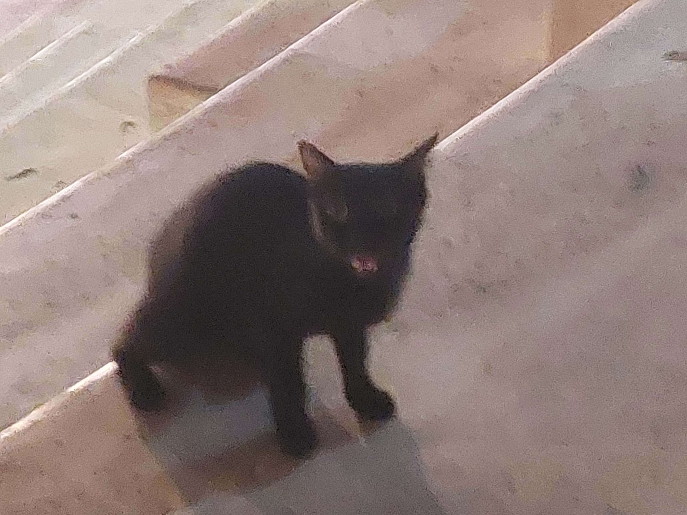
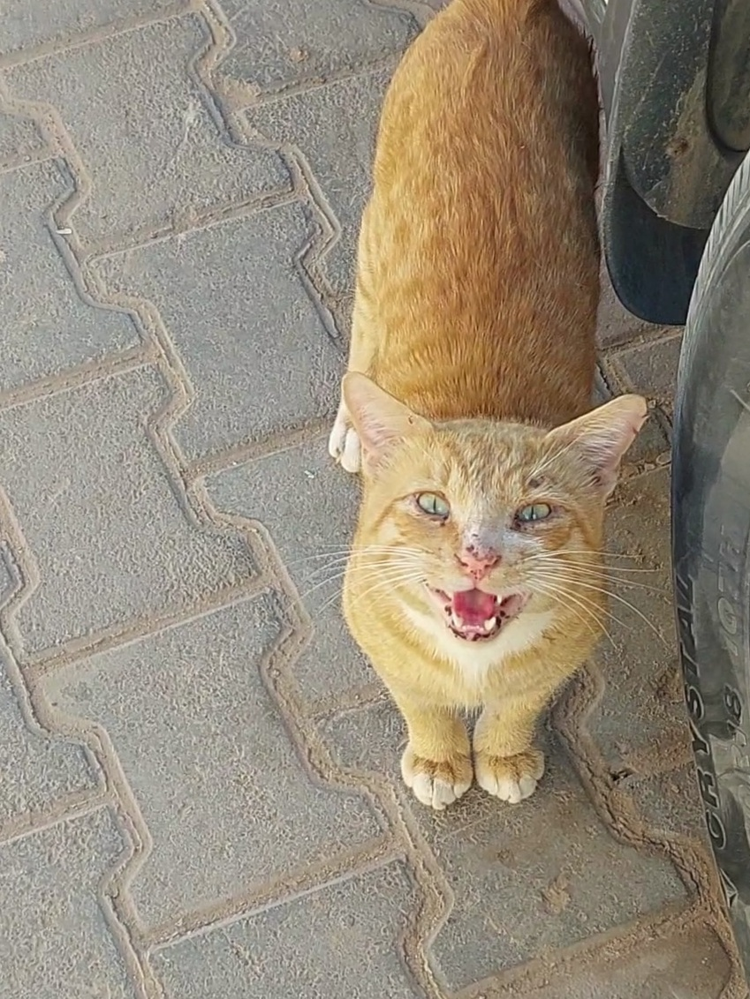
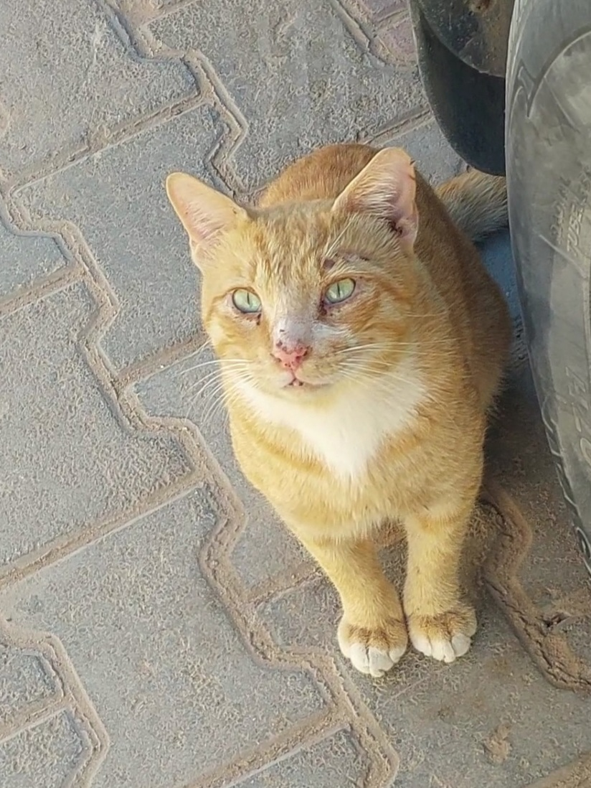
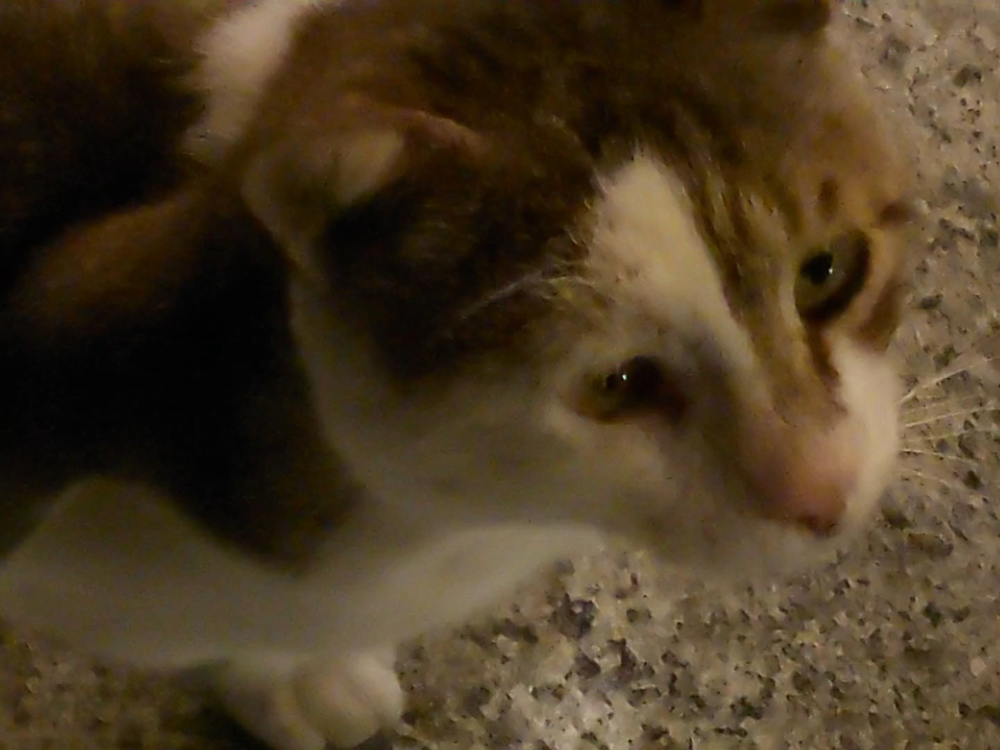
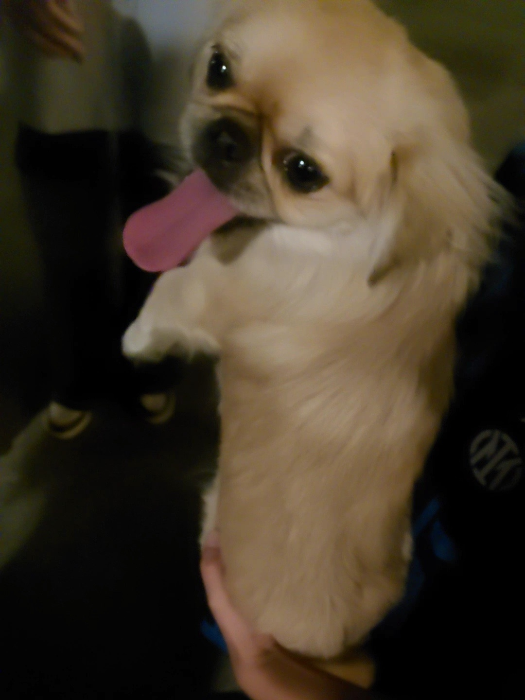

September highlights
I'm considering completely removing this diary page, but for now here's another entry
Old city, sep 9th
For some reason I've only ever visited the old city (in tripoli, libya) twice in recent years, including the time this month. I also only ever stayed near the Arch of Marcus Aurelius, only walking around ميدان بنك دي روما (I'm guessing in english it's De Roma bank sqaure or Banco De Roma square??) and in between old houses.It's really a shame I haven't gotten to seeing more of it before:'(
I went with a few family members and it was nice, I took very few pics of the places and more pics of the kitties I found lol (I LOVEEE CATSSSSSSS) but that's because I spent basically the entire time inside of a resturaunt
Kitties :3






^ kinda sad the quality of those pics got cooked cuz I zoomed in too much
The weather wasn't too hot but it was really humid that day sadly, humidity truly is my worst enemy ugh 
ALSO OMG for context I've had my natural nails long for like 2-3 years now, I just broke one of them so bad I started bleeding TT I was so traumatised that I just cut all my nails back to a medium length and decided I won't let them grow again (if you're reading this and have long nails pls pls pretty pls take care of them, don't let them be a weak as mine were lol)
Beach episode except not really, sep 17th
Since I was taking a break from studying today I thought it would be a good idea to go out with my cousins again! (Can you tell I don't really hang out with non-family members much these days?) We sat kindaa next to the beach ig? It was nice but again humidity truly truly is my worst enemy ugh
I had like 2 sandwitches while chilling away from the noise, but it was really sad that we missed the sunset :(
I thought it was funny we were sitting so close to a street, what wasn't funny was that it resulted in some guys trying to talk to (lowkey shouting at) my cousins and another man staring at them and kinda following us TT
Shitty picture of the sun after it has already set:
And as usual, pics of all the kitties I saw (PLUS A PUPPY)




School started like 2 days ago (or at least for the school that I graduated from) and this is my first year were I get to laugh at people who go while I get to stay home (except I'm still studying.. but hey at least I'm home! Andd I'll be done in just a little over a month!!)
Wrapping this up
As you can tell, I haven't left the house much this month as I've just been studying; speaking of, I burnt myself out on accident which is soooo funnnnn :') I srsly can't wait until I'm done with these exams I'd rather start uni than this bs
The last week of the month was pretty alright tho, I remembered I have a Wii that hasn't been touched in years and decided to mod it andd yea I've been playing a bit now (I'M FINALLY A PROPER RHYTHM HEAVEN PLAYER!!)(on everybody's soul we allll love cooking mama)(Why tf is my dad so good at tennis??)
Hopefully october is the last month I suffer with chemistry (until uni) I'M SO HAPPY I **never** wanna hear anybody mention IAL chemistry EVER AGAINNNNNN
On another note I turn 18 that month which is crazyy how the fuck am I a legal adult now? TT
BACK TO OUR REGUARLY SCHEDULED 'MY WIFE' TALK!! Still haven't seen her irl since May I'm gonna go insane :(( We did, however, call this months (WHICH WE ALSO HAVEN'T DONE SINCE MAY HOLY SHIT) uhh yea anyways I love her ^^
See yall next month (I hope?? unless I completely stop writing idk)